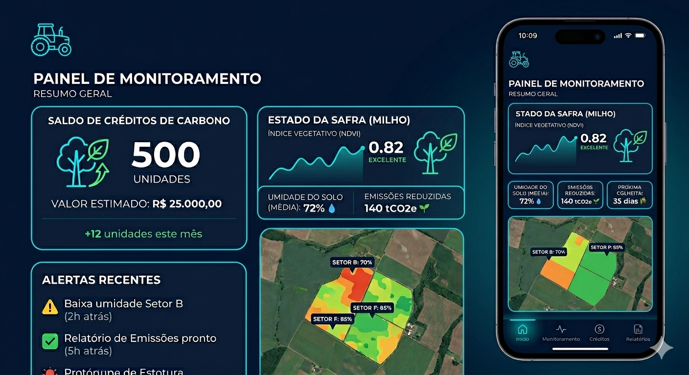

Desmatamento ilegal
Compara imagens recentes com historico da regiao para identificar perda de cobertura vegetal.
Global Solution 2026 - ADS FIAP
O VerdeVigia conecta dados de satelites, produtores rurais, sensores locais e mercados de carbono para detectar riscos ambientais e apoiar decisoes sustentaveis.

Problema
Pequenos produtores nem sempre tem acesso a analises de imagens, seguros climaticos ou certificacao ambiental. A solucao transforma dados complexos em informacoes praticas.
Compara imagens recentes com historico da regiao para identificar perda de cobertura vegetal.
Aponta areas sensiveis para orientar plantio, recuperacao e manejo sustentavel.
Organiza evidencias para creditos de carbono, REDD+ e seguros agricolas.
Como funciona
A plataforma usa dados abertos como Sentinel e Landsat, simula uma camada de inteligencia artificial e valida informacoes com sensores IoT e participacao local.
Impacto